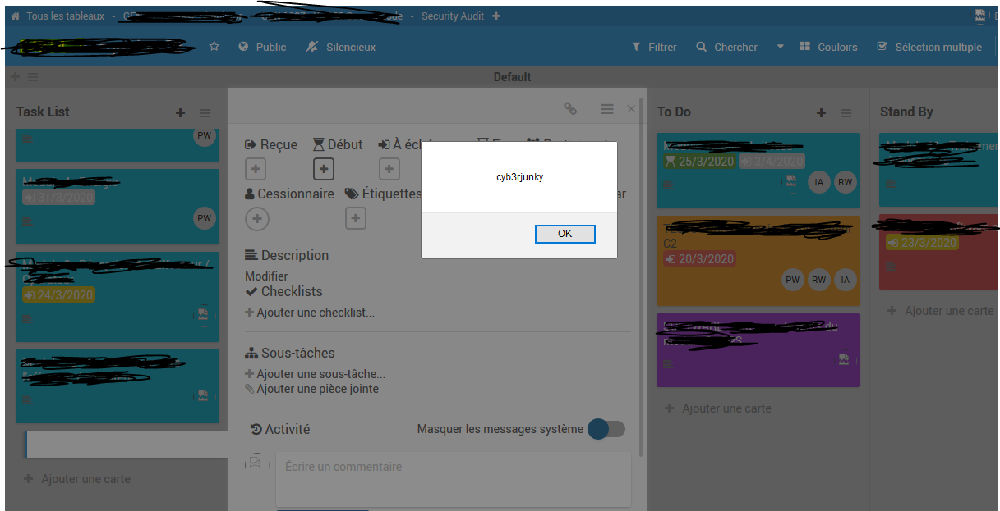
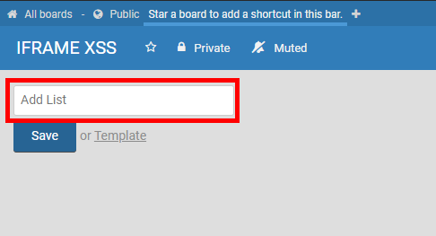
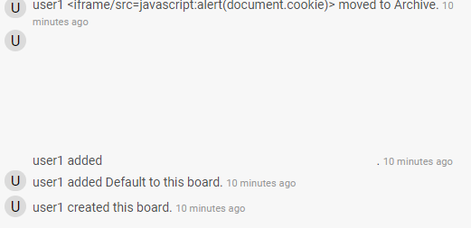
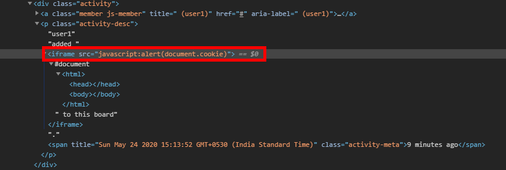
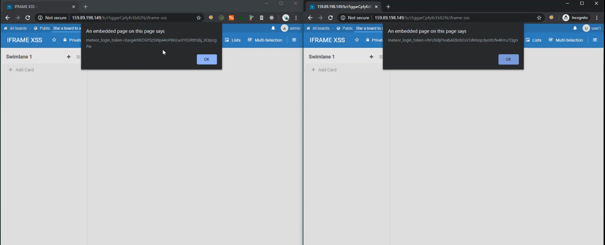

| Timeline |
Details |
| 2020-03-23 17:03 EET |
Report received.
Cyb3rjunky wrote:
Hi Wekan,
I want to report a security vulnerability with the Wekan platform.
This is a persistent XSS bug appears globally across the platform.
The input and output for card names, checklist items, subtask items,
comments,..... are not sanitized, the attacker can pass a javascript
payload to those parameters to exploit the vulnerability in order to
perform: cookie-capture, redirect phishing, deface lead to DOS.
This bug is tested on the newest version of wekan, i suspect it affects
all the earlier version.
Here is my current setup:
|
Wekan Version
|
3.84.0
|
|
Meteor version
|
1.10.1
|
|
Node version
|
12.16.1
|
|
MongoDB version
|
3.2.22
|
|
MongoDB storage engine
|
wiredTiger
|
|
MongoDB Oplog enabled
|
true
|
|
OS Type
|
Linux
|
|
OS Platform
|
linux
|
|
OS Arch
|
x64
|
|
OS Release
|
4.15.0-88-generic
|
|
OS Uptime
|
25 days, 3 hours, 22 minutes, 23 seconds
|
|
OS Load Average
|
0.00, 0.05, 0.06
|
|
OS Total Memory
|
8 GB
|
|
OS Free Memory
|
3 GB
|
|
OS CPU Count
|
4
|
Step to reproduce
- Add a new card
- Put the name: <img src=x onerror=alert(1)>
- The payload is saved and executed everytime the page is loaded

The remediation for this vulnerability is to sanitize the user input to make sure no malice code is saved to
the server.
Integrate with a whitelist if it is neccessary for user to input javascript value.
This vulnerability is not critical however could be used to deny of service or to steal information from
users.
Please act upon notice.
Thank you.
Cyb3rjunky
|
|
2020-03-23
|
Wekan
v3.85 released by xet7 with fix:
"Fix XSS bug reported today 4 hours ago by Cyb3rjunky. Logged in users could run javascript in input fields.
This affects Wekan versions v3.12-v3.84. In Wekan v3.12 there was changes for XSS filter to allow inserting
images,
videos etc on comment WYSIWYG editor so features related to that are now removed.
After this fix, Javascript in input fields is not executed. Thanks to Cyb3rjunky and xet7."
|
2020-05-24 |
Report received.
swsjona wrote:
[Urgent] XSS in any boards
Name: S.W. Sajeth Jonathan
Twitter: @swsjona
Bug type: Stored XSS
Domain: Self Hosted Droplet
Severity: Medium
Summary
A Stored XSS can be performed in any board by adding an IFRAME XSS Payload as a List name.

Steps to Reproduce
- In account A (User) create a new board and add a new list with the payload
<iframe/src=javascript:alert(document.cookie)>
- Archive or delete the List (an attacker can do this to hide the swimlane)
- Request account B (Admin/User) to be added to the board
- Accept the request from account
Explanation
The XSS happens since the payload is being rendered in the Activity tab.
 |
 |
Impact
An XSS attack allows an attacker to execute arbitrary JavaScript in the context of the attacked website and
the attacked user.
This can be abused to steal session cookies, perform requests in the name of the victim or for phishing
attacks.
Supporting Material

I am not familiar with Node.js, therefore I cannot provide the solution code.
But it is clear here, the rendered arbitrary code in the activity session causes this XSS. Therefore, the input has to be sanitized to prevent XSS.
I hope I have written a clear report. If there are any questions or doubts, feel free to contact me. I'll be happy to clarify more.
Best,
Sajeth Jonathan
|
|
2020-06-08
|
Wekan
v4.12 released by xet7 with fix:
"Fix XSS bug reported 2020-05-24 by swsjona.
Logged in users could run javascript in input fields. This was partially fixed at v3.85, but at some fields
XSS was still possible.
This affects at least Wekan versions v3.12-v4.11. After this fix, Javascript in input fields is not executed.
Thanks to swsjona, marc1006 and xet7."
|
| 2021-01-02 17:03 EET |
Report received.
-----------------------------------------------------------------
Vulnerability report JVN#80785288 (begins here)
-----------------------------------------------------------------
This vulnerability was found and reported by the following
person, who would like to be credited when this issue is
published on both the developer's website and JVN.
Name: Ryoya Koyama at Mitsui Bussan Secure Directions, Inc. (https://www.mbsd.jp/)
- Vulnerability ID: JVN#80785288
- Type of Vulnerability: CWE-79 (XSS, cross-site scripting)
actually the report explains Stored XSS.
- Affected Product and its version(s): Wekan v3.94 and v3.95
the reporter built a verification environment using docker-compose.yml
and verified the vulnerability on 2020/04/13.
- Reproduction Steps:
* prerequisites
- Attacker needs to login to Wekan.
- Victim needs to be able to access Wekan,
either logged in to Wekan or not.
* Attack Scenario
- Attacker log in to Wekan, and creates Board, List, Card.
- Attacker attach a malicious SVG file to the created Card.
(see test.svg)
this attached file is accessible with the URL like this:
http://localhost/cfs/files/attachments/hCxhmMyekCFjLJowB/test.svg?token=eyJhdXRoVG9rZW4iOiJsbmtZMi1mN1dSNjFPMTRjS3JzMmx3WlBzRlN3RzloQU9TOWxmZ0dXVWFfIn0%3D&download=true
note that the URL above contains "download" parameter, but
the URL without "download" parameter works too.
- Attacker leads Victim to the URL without "download" parameter.
http://localhost/cfs/files/attachments/hCxhmMyekCFjLJowB/test.svg?token=eyJhdXRoVG9rZW4iOiJsbmtZMi1mN1dSNjFPMTRjS3JzMmx3WlBzRlN3RzloQU9TOWxmZ0dXVWFfIn0%3D
- accessing the URL without "download" parameter, the attached file is
treated "inline" on Victim's web browser, which means
the javascript code inside the file is executed on the web browser.
(see alert.png for the screenshot when the javascript code is executed,
and log.txt for the http request and response.)
* Additional information
- when "download" parameter exists in the requested URL, then
the response comes with
Content-Disposition: attachment; filename="test.svg"
- when "download" parameter is missing, the response comes with
Content-Disposition: inline
- Content-Type of the response depends on the file type;
when the file type is either txt, xml, html, pdf, then
Content-Type: application/octet-stream
when the file type is svg, then
Content-Type: image/svg+xml
any modern web browsers do not open
"application/octet-stream" contents inline, hence
the reporter demonstrates the attack with svg file.
- Possible Impact:
- Confidentiality
Cookie information may be leaked, which can be utilized
to execute some actions by the attacker
- Integrity
page contents may be modified, enabling phishing
- Availability
None
- Initial CVSS evaluation
CVSS:3.0/AV:N/AC:L/PR:L/UI:R/S:C/C:L/I:L/A:N/BS:5.4
- Comments from JPCERT/CC
Sorry to notify this report to you very lately.
We received this report on May 2020, but
missed to handle it in timely manner.
Quick looking at CHANGELOG.md and CVE Hall of Fame,
I don't find any mentions on xss-related fixes.
We don't verify the report on the latest Wekan version by our selves,
but suppose this report still has a value for you.
-----------------------------------------------------------------
Vulnerability report JVN#80785288 (ends here)
-----------------------------------------------------------------
PoC: content of test.svg file
<?xml version="1.0" encoding="utf-8"?>
<svg xmlns="http://www.w3.org/2000/svg" xmlns:xlink="http://www.w3.org/1999/xlink">
<script>
alert(document.cookie)
</script>
</svg>
|
2021-01-03 00:45 EET |
Reply to report VN: JVN#80785288 / TN: JPCERT #93802826.
From maintainer of Wekan, xet7:
Thanks a lot for sending this new report and new PoC !
I did not previously test for Javascript inside of .SVG image.
I tested this with newest Wekan and Firefox 84.0.2, and clicking attachment at Wekan card, this .SVG image did not open popup.
When downloading .SVG attachment from Wekan card to hardrive, and opening only that .SVG file in another tab of same Firefox 84.0.2, popup did not show any text.
So this same fieldbleed was already fixed at Wekan v4.12 2020-06-08.
I added mention to this CVE Hall of Fame page that this fieldbleed is XSS bug, and made some improvements to CVE Hall of Fame pages.
Every vulnerability report is important, thanks for taking the time to send a report!
If original reporter of this vulnerability would like to have nickname or name
at Wekan Hall of Fame, please send more details.
|
2022-05-23 13:30 EET |
Reply to newly received report JVN#74210258 2022-05-23 13.33 EET.
From maintainer of Wekan, xet7:
Currently investigating included special case. If something in this applies to WeKan,
and it would be possible technically to fix this, trying to get all WeKan platforms
builds working and fix released within 90 days, starting today.
Full details will be released after there has been some time to get everyone updated.
|